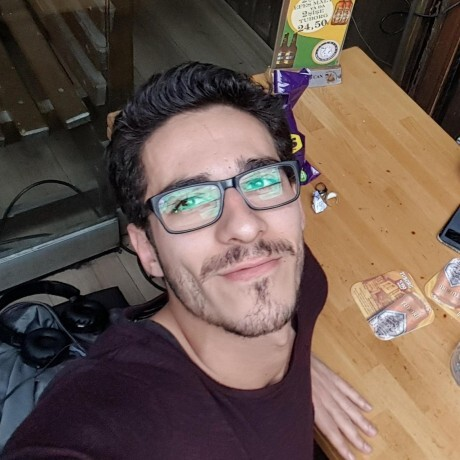

My Name Is Berk Akipek
Hello, I'm Berk Akipek, a dedicated Software Quality Assurance Engineer at Insider. My passion for coding propels my expertise in Python, JavaScript. Proficient in manual and automated testing, I'm currently immersed in DevOps, exploring Kubernetes, AWS, networking, infrastructure as code, and machine learning to drive innovation and continuous improvement.

I spearheaded a transformative initiative that bridges the gap between vulnerable children, particularly refugees facing challenging circumstances, and dedicated educators. This project serves as a crucial connection point, leveraging technology to provide these children with access to quality education and a supportive learning environment. By fostering this digital bridge, we aim to empower and uplift the lives of young individuals in adversity, offering them a pathway to brighter futures through education.